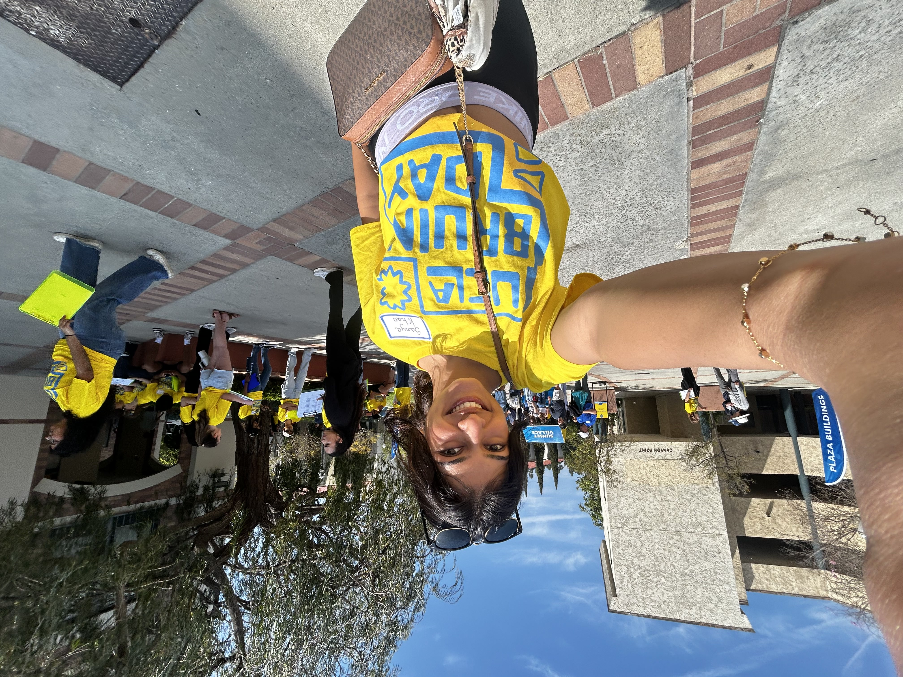
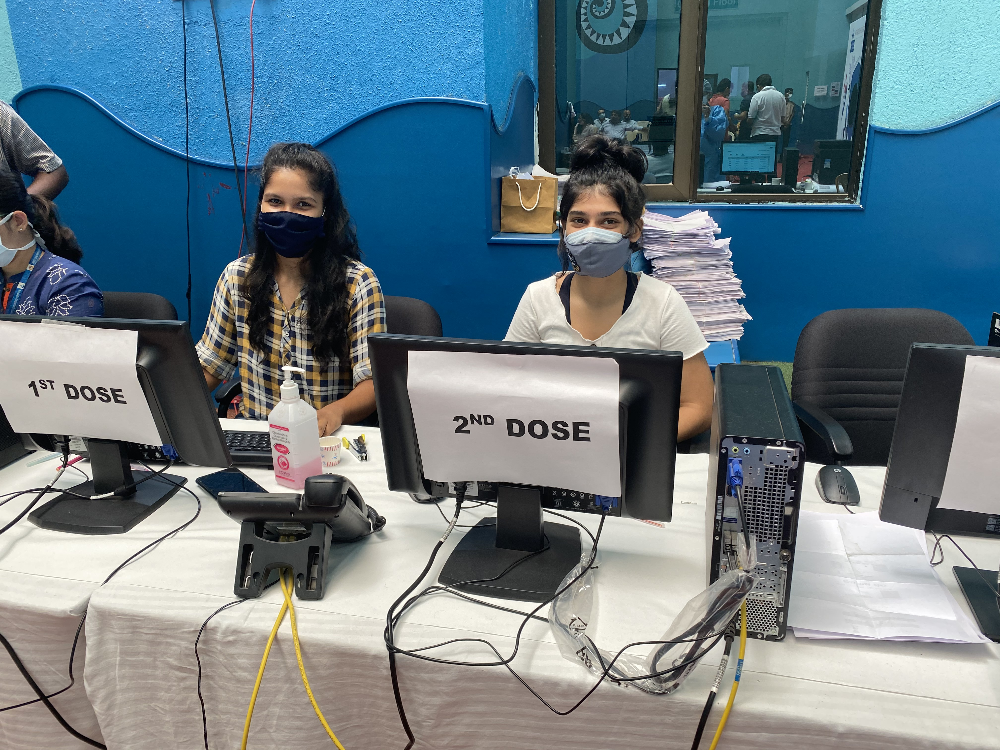

Service & Community Impact
My volunteer work often lives at the confluence of movement, care, and community. Whether through teaching dance and yoga to children undergoing cancer treatment, building service initiatives in Mumbai, or using performance as a form of environmental advocacy, I have been drawn to work that offers both expression and tangible impact.
Mar 2021 – May 2022 · Mumbai
Founded and led Spark A Smile, a community service initiative supporting COVID-affected areas across Mumbai through ongoing clothing and toy drives. I built teams, coordinated donor collection and triage, and helped facilitate quarterly distributions that reached more than 45 areas, with over 100 packets distributed to date.
The initiative also created a ripple effect, inspiring other donors to begin similar drives of their own.
All Volunteer Experience

Throughout all four years of my undergraduate experience at UCLA, I volunteered annually for Bruin Day by leading campus tours, engaging with newly admitted students and their families, and offering guidance on academic life, campus culture, and student opportunities. Helped create a welcoming and supportive experience for prospective students during one of the university's key admissions events.
Sep 2022 – Jun 2026Performed the Bharatanatyam Sword Dance in Karnataka in support of the Green India Mission under the National Action Plan on Climate Change, using performance as a medium for environmental awareness and advocacy. The work promoted the safeguarding of India's biological resources, drew national media coverage, and was recognized simultaneously by Guinness World Records, the Asia Book of Records, and the India Book of Records.
Aug 2018Volunteer at the UCLA Garden, contributing to a campus space centered on sustainability, cultivation, and community care.
Sep 2022 – Jun 2024
Volunteered at SRCC Children's Hospital through the Rotaract Club, helping organize COVID-19 vaccination drives during the pandemic. Worked at the desk to collect patient data, ease the load on hospital workers, and contribute to the coordination and delivery of vaccination initiatives during a time of critical healthcare need.
Apr 2021Led summer dance workshops for approximately 30 students at a Bharatanatyam institute, introducing ballet, jazz, and contemporary forms into a traditionally Indian classical training space. Developed choreography and lesson plans, coached students toward performance, and helped shape an annual showcase for an audience of 1,000 — opening the institute to a more holistic, cross-disciplinary vision of dance education.
2019 – 2022Mentored high school students across Mumbai's major education boards, guiding academic planning, skill development, and college preparation. Provided individual support to students navigating board exams, subject selection, and post-secondary planning during a formative and high-pressure period.
2019 – 2022Volunteered with children undergoing cancer treatment, teaching dance and yoga as a means of physical rehabilitation, emotional release, and joy. Helped lead stage performances, art workshops, and the distribution of books and stationery — contributing to creative programming designed to bring young patients a sense of play, resilience, and community throughout their treatment journey.
2018 – 2020Served as Sergeant-at-Arms for my school's Rotaract Club, helping execute orderly meetings and coordinate service activities, including community visits and trips to the dog shelter. As a member of the chapter's first batch, I contributed to setting routines and standards that continued in later student cohorts.
2019 – 2020